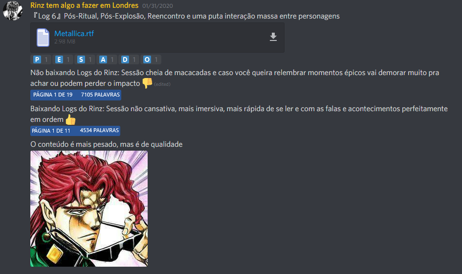

Fugindo de sua terra natal por um crime hediondo, Rinzart embarca escondido de olhos conhecidos e pega uma embarcação após fugir até a Rússia, pegando uma embarcação qualquer desde que o deixasse fugir de lá... Dino Souza da Silva, um brasileiro com negócios familiares pega essa mesma embarcação quando ela arrodea por toda a África, chegando no Brasil, juntamente com sua devota e leal assistente, Lilith, porém, um estranho encapuzado o segue e entra nesse mesmo barco, pouco tempo depois, parando na costa africana, um samurai negro entra escondido, devido a sua situação financeira, na carga inferior da embarcação, ficando lá escondido, indo para a Europa por assuntos pessoais...
Esse mesmo encapuzado que seguia Dino, revela ser um portador de runas, estranhamente, essas runas podiam quebrar as capacidades das runas normais, formando matéria do nada e conseguindo estender a mesma e entre outras coisas... Buscando vingança pelo sequestro e morte de seus pais pela família de Dino, ele trava uma batalha com o mesmo, sendo intervida por Xing ling, um chinês também de passagem para a Europa, Rinzart e Corvu, que perceberam que aquilo poderia ser um perigo maior para a viagem dos mesmos, após uma dura e longa batalha, eles finalmente conseguem derrotar o rúnico, entretanto, colapsando, as runas do homem entram em estado de agitação, explodindo devido a energia atômica gerada, que avassala e explode o barco...
Pescando enquanto está em uma jornada errante em busca de encontrar aqueles que destruiram sua vila e também para conhecer melhor o mundo, Yukari avista cinco elementos, Lilith, Corvu, Rinzart, Xing ling e Dino, puxados pela maré e vivos por algum milagre, Lilith tenta puxar todos até a costa, não tendo toda essa força a mesma pede ajuda para Yukari, que após uma proposta de ouro em retorno acaba ajudando Lilith...
Hospedados na taverna da Ann, que os medicou e salvou, os aventureiros descobrindo que são usuários de runas, se unem entre si para resolver um problema, a falta de localização geográfica, não sabendo onde estavam exatamente e necessitando de um mapa, eles aceitam resgatar Allora, uma garota que havia sido capturada por um desertor famoso chamado Brutus...
Continua após a publicidade

Após resgatar Allora, que entra no grupo, o grupo parte para Nápoles, entretanto, Dino deserta o grupo no meio do caminho e junto com Lilith segue sua própria estrada, chegando em Nápoles, os heróis percebem que há um domo de matéria negra cobrindo a cidade, que impede pessoas da cidade de saírem dela, auxiliados pelo chefe da guarda local e pela doutoura Takemi, o grupo consegue resolver a situação, destruindo uma estrutura chamada ''matriz'', onde eles tem contato com uma entidade estranha, entretanto, poderosa, chamada Antagonist.
Conversando com Antagonist, o grupo descobre que há diversas ''matrizes'' espalhadas pela Europa, sendo o próprio poder de Antagonist o responsável por isso, seu corpo estava contaminado por uma energia maligna, desconhecida, que estava tentando usurpar seu corpo e consequentemente, seu poder que poderia ser extremamente perigoso nas mãos erradas, além disso, um velho conhecido de Corvu Caxumbu, OrochiMarcus, estava tentando aproveitar da instabilidade e fraqueza de Antagonist para tentar matá-la e lutar contra a energia para roubar os poderes advindo de seu corpo, percebendo que era uma situação de risco não só para a Europa, mas também para o mundo, o grupo parte para Milão, entretanto, na saída, o chefe da guarda local pede para que eles escoltem um nobre que tinha ficado preso dentro da cidade, entretanto...
No meio do caminho para Milão, o grupo é parado por uma criatura estranha, que se autodenomina ''Pistoleiro'', um humanóide feito de matéria negra, um tipo que o grupo já havia encontrado anteriormente, o Pistoleiro deixou o grupo muito avariado, além de ter desmaiado o nobre que estavam escoltando, ao chegar nos portões de Milão, extremamente machucados e com o nobre desmaiado em mãos, os guardas logo desconfiaram e prenderam todo o grupo.
Na prisão, nossos heróis tem contato com Antagonist através de sonhos, Antagonist diz que irá mandar um representante influente para ajudar na organização contra OrochiMarcus, o bispo local, Urbano.
Assim acontece, o grupo é solto da prisão e parte em direção a luta contra OrochiMarcus, parados por um de seus servos, que é derrotado rapidamente pelo grupo...
Encontrando Orochimarcus a apenas alguns KM da Torre Inferno, o grupo encontra o vilão enquanto o mesmo drena o poder de Antagonist, Rinzart abre um ponto fraco com a lâmina do olho da vingança (Item que acharam em Nápoles) e através de Antagonist, nossos heróis são arrastados junto com Orochimarcus numa viagem extraplanar, onde acabam numa dimensão em que OrochiMarcus perde a maior parte de seus poderes, depois de uma longa luta, Tham desfere o golpe final, ameaçado, OrochiMarcus comete seppuku, dando um discurso suspeito, apesar disso, Corvu finalmente completa sua vingança e põe um fim a aquele maldito.